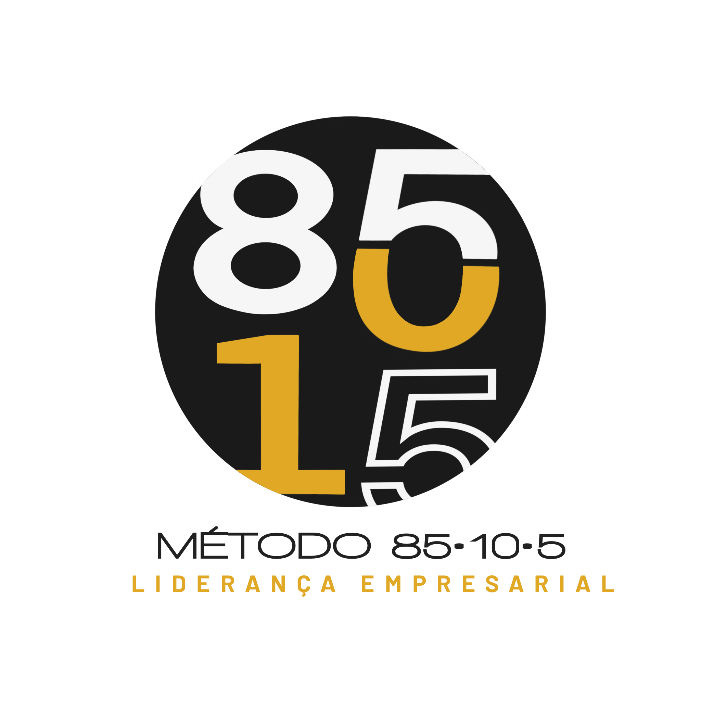

MAD Consultoria
Roda do Empresário — Diagnóstico
Progresso
Perguntas
Voltar
Ao selecionar uma alternativa, você avança automaticamente.
Resultado — Roda do Empresário
Gerado em 2025-09-23 02:47
Gráfico Radar
Baixar PDF
Imprimir / Salvar em PDF
Agende sua devolutiva
Ver respostas selecionadas